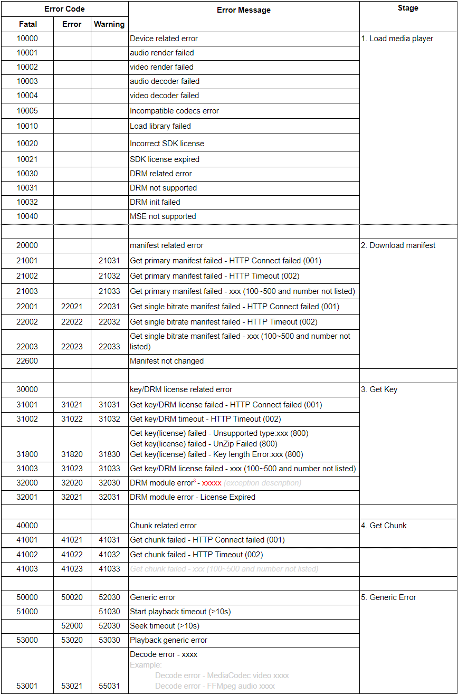
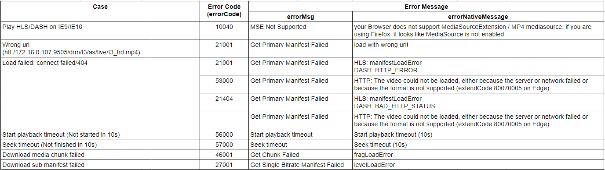

Tutorial: Errors
Errors
Error codes

Examples

Home
Classes
AdaptivePlayer
EventManager
FakeEventTarget
LogUtil
NLError
StateManager
Tutorials
Basic usage
Configuration
Errors
Events
Features
Migrate to 3.0.0
Global
browserType
coreVersion
ErrorCode
ErrorDetailedCode
ErrorReportLevel
EventType
Kind
LogLevel
OS
PlayerType
State
StreamType
version